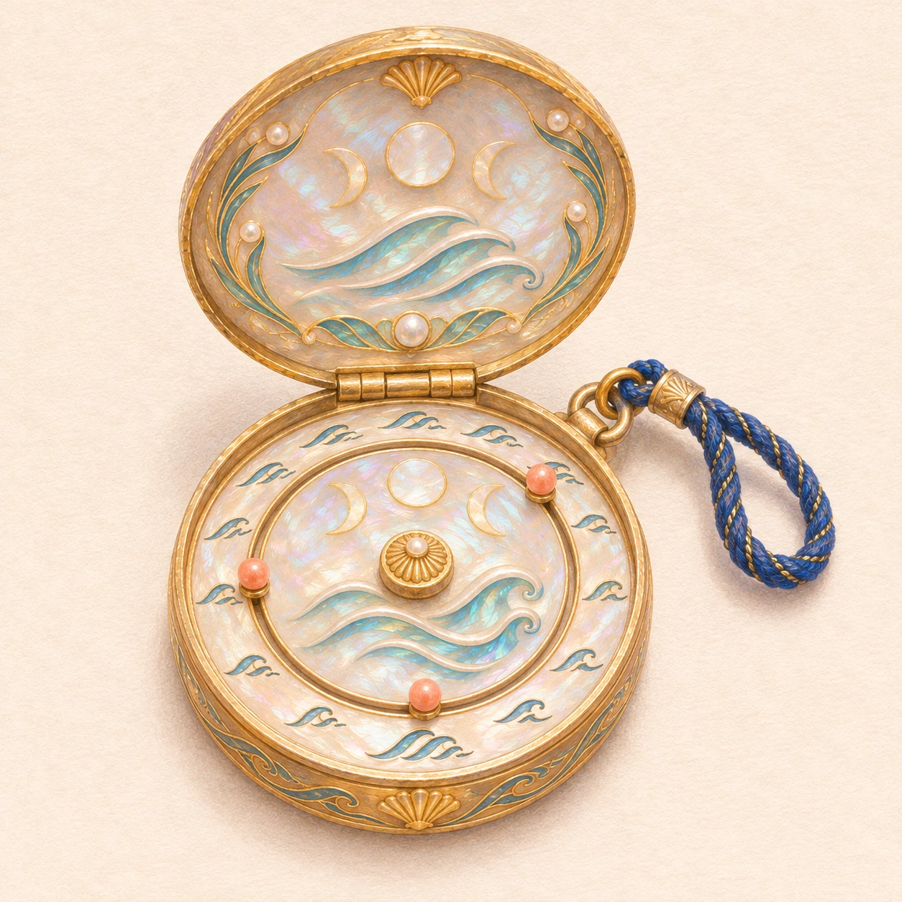

Вещь с историей
Приливный календарь Норы
Лист плотной бумаги в клетку, сложенный вчетверо, с пятнами супа на углу. По строкам — городские дни, по столбцам — галереи; синим отмечены часы закрытия, звёздочкой — вечера большой воды.
Показывает, какие галереи и когда закрывает вода, чтобы выбрать путь по времени. Нора объясняет любую строку.